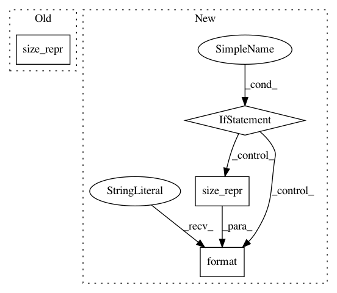

59f362ee07c07d6a3ddc70ddbf1bfe925d3d8392,torch_geometric/data/data.py,Data,__repr__,#Data#,365
Before Change
self.norm.size(0)))
def __repr__(self):
info = ["{}={}".format(key, size_repr(item)) for key, item in self]
return "{}({})".format(self.__class__.__name__, ", ".join(info))
After Change
cls = str(self.__class__.__name__)
has_dict = any([isinstance(item, dict) for _, item in self])
if not has_dict:
info = [size_repr(key, item, pad=0) for key, item in self]
return "{}({})".format(cls, ", ".join(info))
else:
info = [size_repr(key, item, pad=2) for key, item in self]
return "{}(\n{}\n)".format(cls, ",\n".join(info))
In pattern: SUPERPATTERN
Frequency: 4
Non-data size: 4
Instances
Project Name: rusty1s/pytorch_geometric
Commit Name: 59f362ee07c07d6a3ddc70ddbf1bfe925d3d8392
Time: 2020-05-31
Author: matthias.fey@tu-dortmund.de
File Name: torch_geometric/data/data.py
Class Name: Data
Method Name: __repr__
Project Name: rusty1s/pytorch_geometric
Commit Name: 4c8508b85ebc4c869850dce4a0cd7144f64b13c5
Time: 2020-05-31
Author: matthias.fey@tu-dortmund.de
File Name: torch_geometric/data/sampler.py
Class Name: Block
Method Name: __repr__
Project Name: rusty1s/pytorch_geometric
Commit Name: 47313e3cf6dd2e6a7d8242b715f8ef60b8f02778
Time: 2020-05-14
Author: matthias.fey@tu-dortmund.de
File Name: torch_geometric/data/data.py
Class Name: Data
Method Name: __repr__
Project Name: rusty1s/pytorch_geometric
Commit Name: 5c22982a949b8c1597d1e8c13428adf4db0e45e2
Time: 2020-05-14
Author: matthias.fey@tu-dortmund.de
File Name: torch_geometric/data/sampler.py
Class Name: Block
Method Name: __repr__